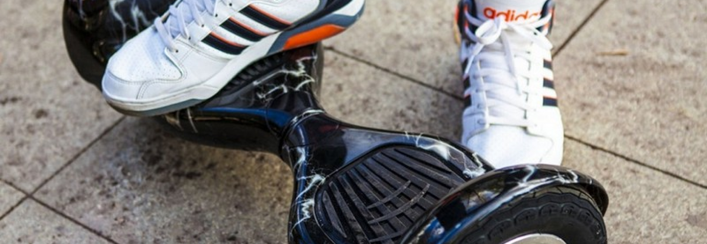
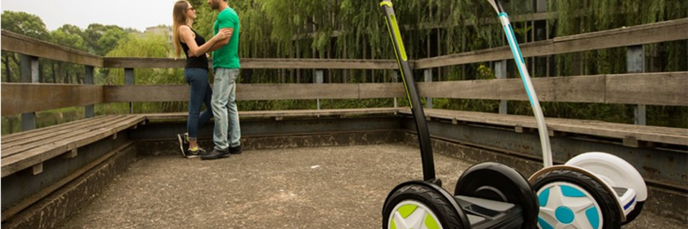

Smart Balance
Это известный бренд практически в любой точки мира. Эта фирма известна тем, что выпускает качественные и хорошие гироскутеры по доступным ценам. Именно Smart Balance обладает титулом - "Самый дешевый гироскутер в мире". Когда гироскутеры вышли в свет в 2010 году, то они были дешевле чем Сигвеи, но все равно были достаточно дорогие.
Поэтому у разработчиков был план сделать гироскутер максимально доступным для каждого. Они старались не ставить на модели сильно дорогие материалы, там где это не нужно и не требуется. При этом внутренности самих модели и платы управления балансировки были сделаны на высшем уровне.

Фирма Smart Balance опирается только на производство гироскутеров и у них их гораздо больше чем у многих других фирм. Тут есть и очень дешевые модели от 12500 рублей и дорогие от 30000 рублей. Этот бренд дает возможность каждому выбрать гироскутер на свой вкус, как по характеристикам, так и по кошельку.
Есть также большой выбор по классу гироскутеров, от 4.5 дюймовых детских гироскутеров, до моделей внедорожников с 10-ти дюймовыми колесами. Сами же модели все отличаются по размеру самого гироборда, а также по размеру колес, из-за этого сильно разница характеристики на каждый гироскутер.
Wmotion
Данный бренд известен тем, что производит качественные гироскутеры в средней по цене категории. Обычно цена на их модели начинаются от 15000 рублей. При этом производители стараются преподнести что-то новое в каждую модель. Именно этот бренд первый начали выпускать гироскутеры с колонками и Bluetooth системой.
Да сейчас уже никого не удивишь наличием музыки с гироскутера, но именно они были первыми. Также практически у всех гироскутеров есть возможность подключить гироскутер к телефону с помощью специального приложения и следить за вашим средством передвижения. Также именно они первыми начали поставлять гироскутеры именно с трехплатной системой балансировки, хотя до этого почти все производство гироскутеров было с двухплатной системой.

Все патентованные производители гироскутеров, а также Wmotion на данный момент осуществляют жесткий контроль качества прям на заводе и бракуют некоторые гироскутеры, даже с малейшими погрешностями производства.
Wmotion - это фирма, которая производит отличные гироскутера, хорошего качества в средней ценовой категории. Правда эта фирма не так распространена как Smart Balance, но при этом подделок на рынке именно данных моделей в разы меньше.
В нашем интернет-магазине представлен большой выбор гироскутеров, сигвеев и электросамокатов от известных мировых производителей.
Все товары, представленные на нашем сайте, отобраны лучшими специалистами в этой области.
Покупателям
Покупателям
Покупателям
О нас
Наши преимущества
Наши консультации
О нас
Наши преимущества
Наши консультации
О нас
Наши преимущества
Наши консультации